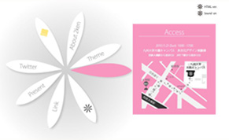
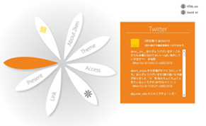

Portfolio * brighter and brighter
Project of 2ken10 「花をそえよう。」 広報サイト
>> このサイトへ行く
- ・制作期間
- 2010年9月下旬〜10月上旬
- ・使用ツール
- Illustrator / Flash / Dreamweaver
- ・コンセプト
- とにかくイベントに興味を持ってもらう！
- ・備考
- 3名でのグループ制作
担当：企画 / Flash作成（ローディング除く）
大学で所属している、学祭でインスタレーションイベントを行うサークル「2研企画」の、2010年度の企画「花をそえよう。」の広報webサイトです。
2研企画は活動内容が分かりにくいサークルですので、とにかくまずはお客さんに興味を持ってもらうことから始めよう！と思いました。 ページを読み込む際に花にランダムに色がついたり、花弁に動きと音のインタラクティブ要素を加えたり、イベントまでのカウントダウンをしたりと細かいギミックを盛り込んで、閲覧者に楽しんでもらいながらイベント情報を伝えられるようなwebサイトを目指しました。
この年度のイベントのメインツールが「花」であること、キレイさを押し出すという方針であることから、それに沿ったビジュアルイメージで制作しました。また、Actionscriptを使ってのtwitterの読み込みにも挑戦しています。
コンテンツは、トップ・アバウト・テーマ・アクセス・カウントダウン・リンク・プレゼント・twitter表示の8つです。

 